Data-heavy UX: клиентская база корпоративной CRM
Как сохранить единый пользовательский опыт в корпоративной CRM, которая одновременно работает на low-code-платформе и собственных веб-компонентах.
Контекст
Клиентская база — один из самых востребованных разделов корпоративной CRM. Именно отсюда менеджеры начинают работу с клиентом: находят компанию, оценивают её потенциал и принимают решение, стоит ли продолжать работу. Но долгое время этот сценарий был разорван между несколькими системами. Пользователи анализировали данные в собственных рабочих таблицах, смотрели обороты в СПАРК, копировали ИНН и только после этого переходили в корпоративную CRM, чтобы найти клиента и открыть его карточку.
Для одной из ключевых групп пользователей такой процесс был настолько неудобным, что полноценная клиентская база стала одним из условий перехода на новую CRM.
Иногда проблема не в том, что данных мало. Проблема в том, что рабочий процесс начинается за пределами продукта
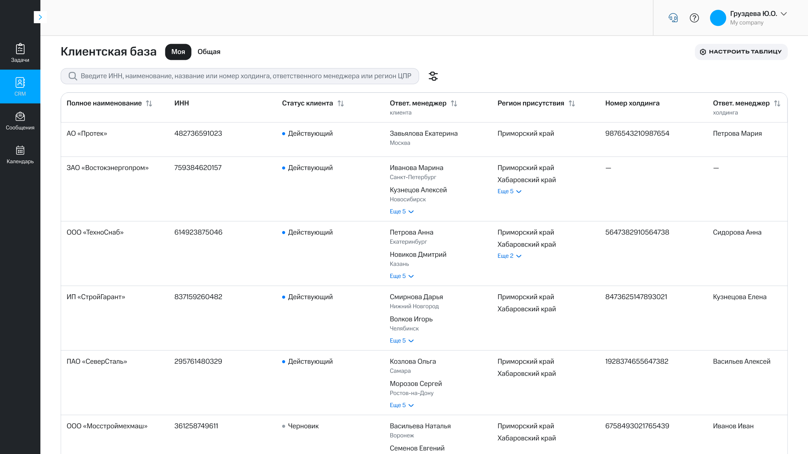
Проблема
На первый взгляд задача выглядела как проектирование большой таблицы. На практике нужно было спроектировать рабочее место менеджера. Пользователю важно быстро понять, что представляет собой клиент: кто за него отвечает, были ли продажи, входит ли компания в холдинг, какие продукты уже подключены и есть ли потенциал для дальнейшей работы. При этом интерфейс должен был оставаться удобным для работы с большим объёмом данных и не превращаться в бесконечный горизонтальный скролл.
Но самой сложной частью задачи оказалась вовсе не таблица.
Корпоративная CRM постепенно переходит от стандартных компонентов low-code-платформы к собственным веб-компонентам. Получалось, что разные разделы системы были реализованы на разных технологиях. Если бы мы проектировали их независимо друг от друга, пользователь постоянно сталкивался бы с разными правилами работы. Поэтому главной задачей стало сохранить единый пользовательский опыт независимо от того, какой технологический стек находится под конкретным экраном.
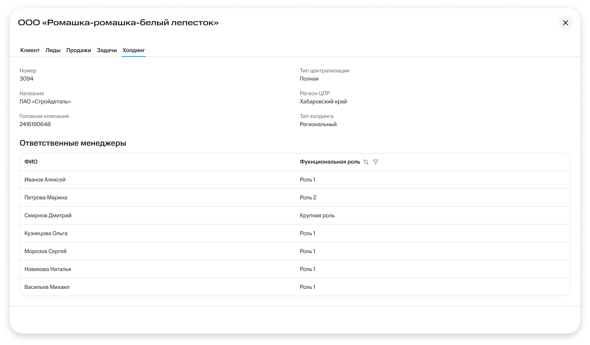
Исследование
Мы проводили интервью с менеджерами B2B-продаж, руководителями подразделений и представителями ключевой пользовательской группы, наблюдали за их ежедневной работой и тестировали новые сценарии. Очень быстро выяснилось, что пользователи не воспринимают поиск как функцию конкретного раздела. Для них это один непрерывный процесс. Неважно, начинают они работу из рабочего пространства, клиентской базы или карточки клиента. Они ожидают одинакового поведения интерфейса и не хотят каждый раз заново осваивать новую механику. Наши ограничения - не их проблема.
Именно это стало главным инсайтом проекта.
Мы перестали проектировать отдельный поиск для клиентской базы и начали проектировать единый паттерн поиска, который впоследствии можно было использовать и в других высоконагруженных разделах CRM.
Было
Стало
Большая часть рабочего сценария теперь выполняется внутри CRM. Часть данных пока остаётся во внешней аналитической системе.
Архитектура данных
Следующим шагом стало определить, какая информация действительно помогает принять решение ещё до открытия карточки клиента. Во время интервью оказалось, что пользователю редко нужен полный набор данных одновременно. Гораздо важнее сразу увидеть несколько ключевых признаков, а всё остальное иметь возможность быстро добавить при необходимости.
Совместно с методологами мы определили состав полей, которые отображаются по умолчанию, а остальные вынесли в настройку таблицы. Так интерфейс остался читаемым, но при этом не ограничивал опытных пользователей, которым нужен более широкий набор данных.
В data-heavy интерфейсах невозможно показать всё. Задача дизайнера — определить, что пользователь должен увидеть первым
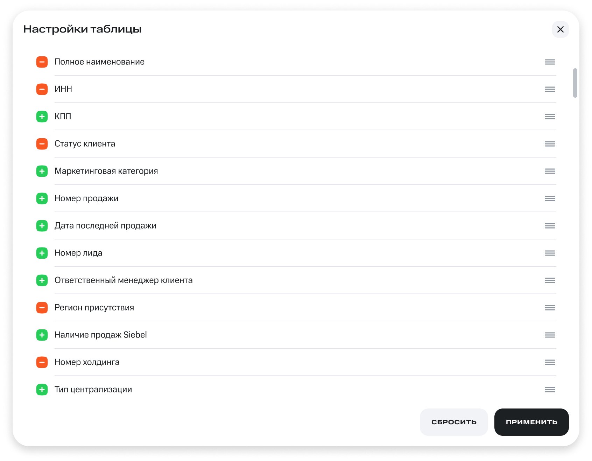
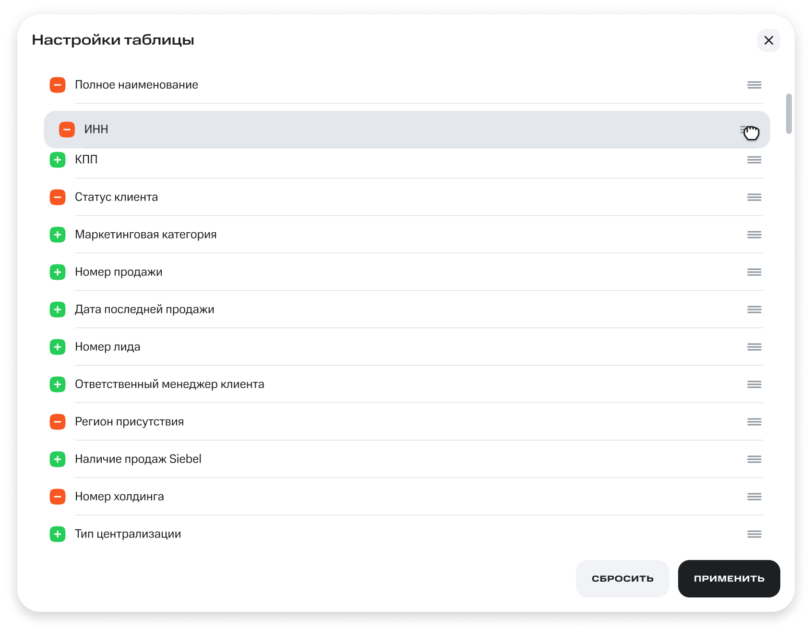
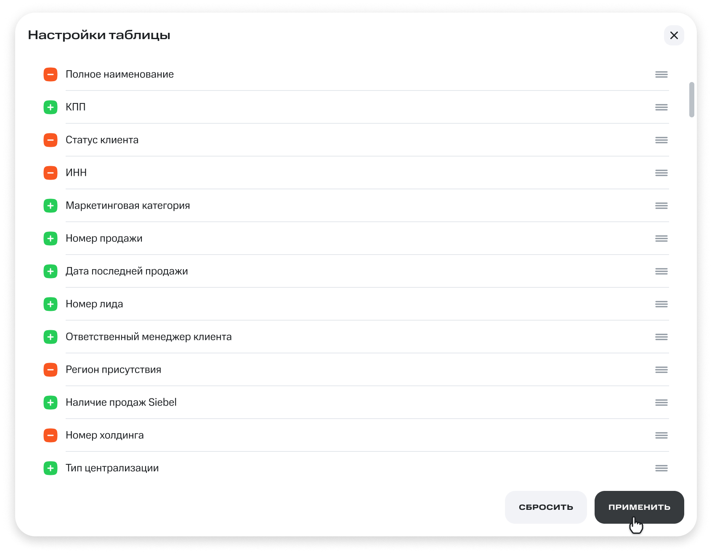
Консистентность поиска
Параллельно с клиентской базой мы проектировали новый поиск в разделе лидов. Именно здесь возникла самая сложная и интересная задача проекта. Поиск в рабочем пространстве продолжал работать на стандартных компонентах low-code-платформы, а клиентская база уже проектировалась на собственных веб-компонентах. Технически это были разные интерфейсы, но пользователь не должен был ощущать этой разницы.
Нам было важно не просто сделать два похожих поиска. Нужно было добиться одинаковой логики: одинаково запускать поиск, показывать применённые условия, работать с фильтрами и возвращаться к исходной выдаче. Ограничения двух технологий отличались, поэтому одинаковый внешний вид сам по себе не решал задачу — механика должна была оставаться понятной и предсказуемой в обоих интерфейсах. Поэтому полнотекстовый поиск, фильтрацию, сортировку и настройку таблицы мы проектировали как связанные части одного паттерна. Независимо от раздела системы пользователь должен был действовать по одним и тем же правилам.
Одним из самых спорных вопросов стала сортировка. Из-за архитектурных ограничений первоначально её предлагалось вынести в отдельное окно настроек. С технической точки зрения такое решение выглядело проще, но полностью расходилось с привычной моделью работы пользователей. На интервью и тестированиях менеджеры пытались сортировать данные так же, как в Excel: нажимали на заголовок столбца и ожидали сразу получить результат.
Я вынесла результаты исследований на обсуждение с архитекторами и PO. После нескольких итераций первоначальное решение удалось пересмотреть и реализовать сортировку непосредственно в таблице. На следующем раунде тестирования пользователи начали пользоваться ей без объяснений, как если бы она существовала в системе всегда. Для нас это стало подтверждением, что технические различия между компонентами не должны перекладываться на пользователя.
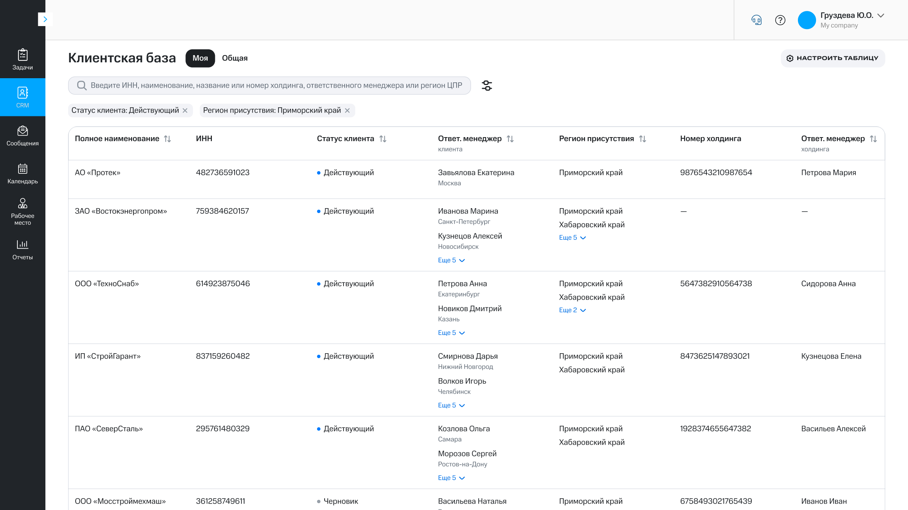
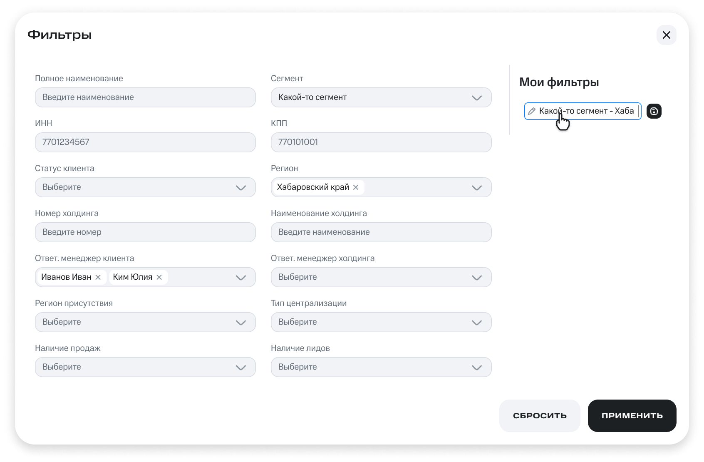
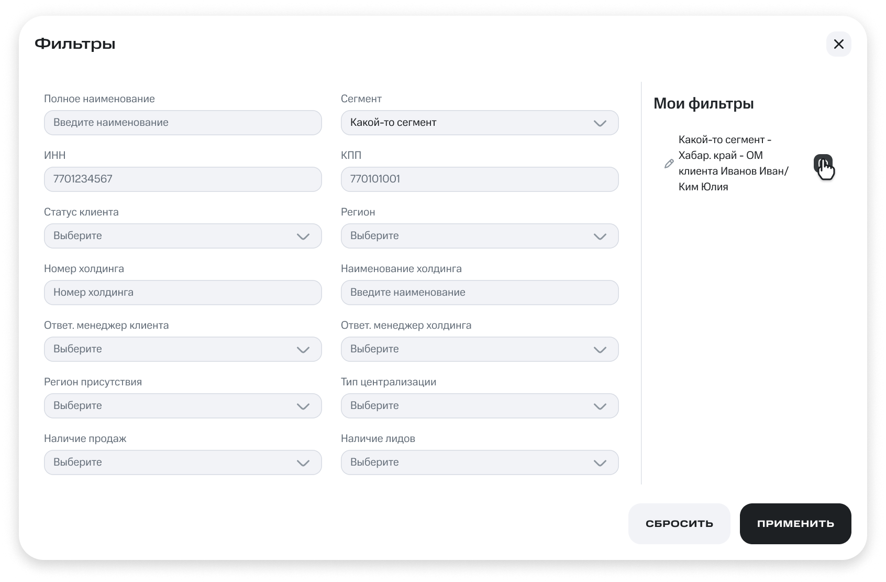
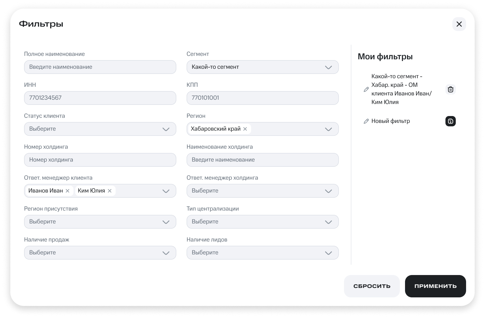
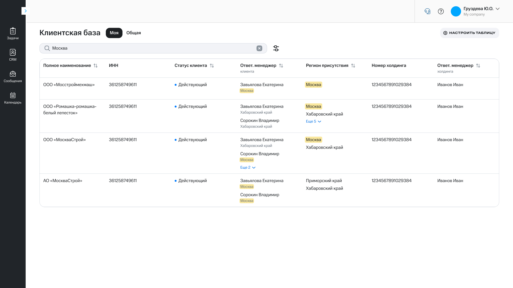
Результат
В результате клиентская база перестала быть просто реестром клиентов и стала полноценной точкой входа в работу менеджера. Теперь пользователь может найти клиента через полнотекстовый поиск, оценить ситуацию прямо в таблице, открыть карточку и сразу перейти к связанным лидам или продажам. Значительная часть сценария, который раньше был разорван между рабочими таблицами, СПАРК и корпоративной CRM, теперь выполняется внутри CRM. Часть данных пока остаётся во внешней аналитической системе.
Для одной из ключевых групп пользователей удобная клиентская база была важным условием перехода на новую CRM. После тестирования пользователи приняли интерфейс.
Но главным результатом стал не отдельный экран. Работа над клиентской базой помогла сформировать единые принципы поиска, фильтрации, сортировки и настройки таблиц для системы, которая одновременно использует low-code-платформу и собственные веб-компоненты.
Мы не просто спроектировали клиентскую базу. Мы сформировали паттерны работы с высоконагруженными интерфейсами, которые затем стали использоваться в остальных разделах CRM.
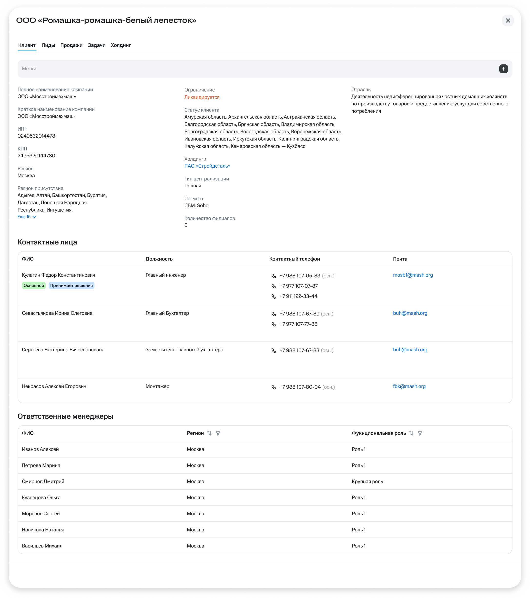
Интерфейсы и данные реконструированы для портфолио. Названия отдельных сущностей и детали реализации изменены для соблюдения конфиденциальности.